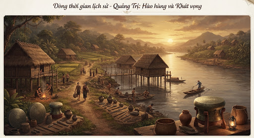
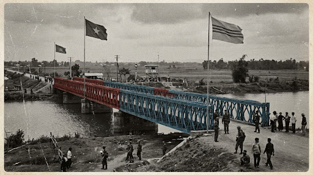

Biên niên
Dòng sông thời gian
Từ dấu vết cư trú sớm trên đồng bằng, qua vĩ tuyến 17, đến tái thiết và điện gió. Đây là khung kể — số liệu chi tiết xem cổng Sở và trang dòng thời gian.
Dấu vết cư trú sớm

Dọc sông có dấu vết cư trú và đồ đồng. Đây là phần mở khung kể — trưng bày cụ thể xem bảo tàng / di tích khi tỉnh công bố, không bịa hiện vật.
arrow_forward Sang trang văn hóaĐất chia đôi

Sông Bến Hải, vĩ tuyến 17: giới tuyến rồi chiến trường. 1954–1975 định hình ký ức tỉnh — đọc tiếp dòng thời gian và Thành Cổ.
menu_book Dòng thời gianHàn gắn mặt đất

Sau 1975: rà phá bom mìn, phủ xanh, dựng lại nhà cửa. Quảng Trị từng là một trong những tỉnh ô nhiễm bom mìn nặng — việc tái thiết là sự thật, không phải khẩu hiệu.
Khát vọng hôm nay

Điện gió phía tây, biển phía đông, du lịch về nguồn. Đọc tin năng lượng và cộng đồng bản làng trên các trang chuyên.